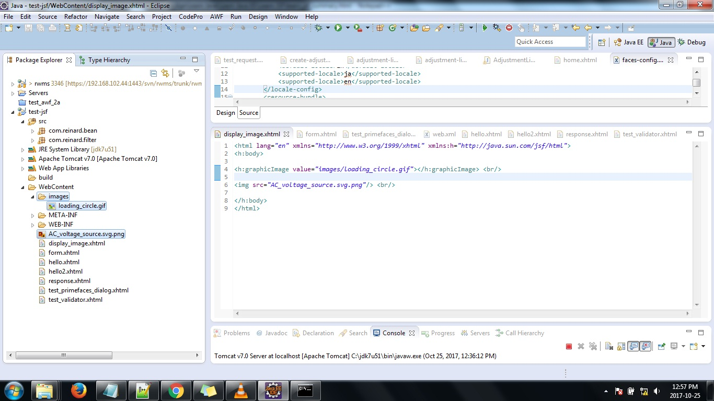
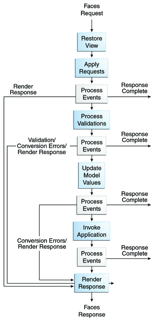
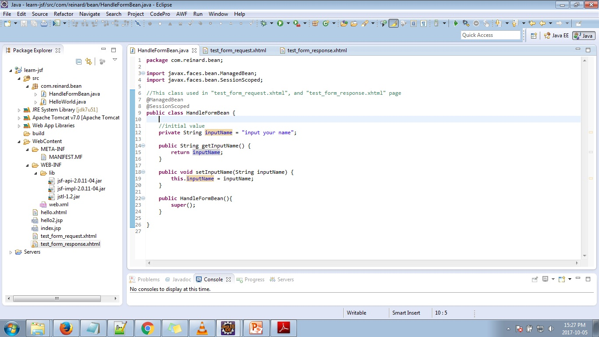

===These are steps to build and run Simple JSF Web Application Using Eclipse and Tomcat===
Note: This project use java 7 Update 51
1. Open Eclipse.
2. Create New "Dynamic Web Project" (image 1.1)
image 1.1
Note: The advantages of using "Dynamic Web Project" is: If there is a changes in source code after the application is runnin in server, then eclipse automatically apply the changes and reload the web application, so we don't have to "clean, install, deploy" the web application.
3. Fill in the project name (image 1.2)
4. Click "New Runtime..." button. (image 1.2)
image 1.2
5. Choose the installed tomcat server, then click "finish" button. (image 1.3)
image 1.3
6. Click "next" button. (image 1.4)
image 1.4
7. Click "next" button. (image 1.5)
image 1.5
note: All ".java file" under "/src" folder will be compiled to ".class file", and then saved in "build/classes" folder.
8. Fill in "Context Path", and "Content Directory" to name the folder to store files for the web (this is the same as "webapp" folder in a standart ".war" file), then click "Finish" button.
image 1.6
9. Download the library (.jar file) need to run the Java Server Faces Framework:
image 1.7
image 1.8
image 1.8a
10. Copy the libraries to the "WEB-INF\lib" folder:
image 1.9
11. Create java package in the "src" folder:
image 1.10
12. Create java class (Managed Bean) in that package:
image 1.11
Name this ManagedBean with "helloWorld" using annotation @ManagedBean(name = "helloWorld", eager = true):
image 1.12
13. Create ".xhtml" file (view) in "/WebContent" folder:
image 1.13
Note: #{helloWorld.getWorld()} will call method public String getWorld() of class com.reinard.main.HelloWorld:
* To display image from html, place your images inside the "WebContent" directory, or packaged in ".jar" file.
Example:
 image 1.21
* If your servlet url mapping allowed, you can access all "resource" folder in ".jar" file under "WEB-INF/lib" directory.
Example:
a. Your "web.xml" file contains no servlet declaration and mapping.
b. You have file "my_lib.jar" that contains:
META-INF/
resources/
Desert.jpg
hello.xhtml
hello1.html
c. Put the file "my_lib.jar" inside "WEB-INF/lib" directory:
image 1.21
d. Now, run the server.
e. You can access all file, using: http://[ip]:[server listening port]/[context-path]/[file-name]
Example:
http://localhost:38080/learn-jsf/Desert.jpg
http://localhost:38080/learn-jsf/hello.xhtml
http://localhost:38080/learn-jsf/hello1.html
* http://www.oracle.com/technetwork/java/javaee/documentation/index-137726.html
* The basic of JSF is on Java EE 5 tutorial (http://docs.oracle.com/javaee/5/tutorial/doc/bnaph.html)
* Java Servlet technology is the foundation of all the web application technologies.
* JavaServer Faces technology is a server-side user interface component framework for Java technology-based web applications.
* The main components of JavaServer Faces technology are as follows:
An API for representing UI components and managing their state; handling events, server-side validation, and data conversion; defining page navigation; supporting internationalization and accessibility; and providing extensibility for all these features
Tag libraries for adding components to web pages and for connecting components to server-side objects.
Note: JSP can include JSF tag.
* A JSF application can map HTTP requests to component-specific event handling nor manage UI elements as stateful objects on the server.
* The JavaServer Faces technology APIs are layered directly on top of the Servlet API, as shown in Figure 3-2. This layering of APIs enables several important application use cases, such as using another presentation technology instead of JSP pages, creating your own custom components directly from the component classes, and generating output for various client devices.
Figure 4-2 Java Web Application Technologies
* JavaServer Faces applications must be compliant with the Servlet specification, version 2.3 (or later) and the JavaServer Pages specification, version 1.2 (or later). All applications compliant with these specifications are packaged in a WAR file, which must conform to specific requirements in order to execute across different containers.
The WAR file typically has this directory structure:
index.html
JSP pages
WEB-INF/
web.xml
faces-config.xml
tag library descriptors (optional)
classes/
class files
Properties files
lib/
JAR files
* One requirement of a JavaServer Faces application is that all requests to the application must go through "FacesServlet".
* A "FacesServlet" instance manages the request processing life cycle for web applications and initializes the resources required by JavaServer Faces technology.
* Before a JavaServer Faces application can launch the first page (View), the web container must invoke the "FacesServlet instance" in order for the application life cycle process to start.
(The application life cycle is described in the section "The Life Cycle of a JavaServer Faces Page".)
* To make sure that the FacesServlet instance is invoked, you provide a mapping to it.
(Read https://docs.oracle.com/cd/E13222_01/wls/docs92/webapp/configureservlet.html>, for more info how to map Servlet to URL.)
<!-- Define a FacesServlet Class-->
<servlet>
<display-name>FacesServlet</display-name>
<servlet-name>FacesServlet</servlet-name>
<servlet-class>javax.faces.webapp.FacesServlet</servlet-class>
<load-on-startup>1</load-on-startup>
</servlet>
<!-- Mapping FacesServlet to URL-->
<servlet-mapping>
<servlet-name>FacesServlet</servlet-name>
<url-pattern>/guess/*</url-pattern>
</servlet-mapping>
* Because the view (.xhtml) page, is compiled, compiler will give error if there is any incomplete or incorrect syntax. Example: forget to add double quote in attribute value.
===The Life Cycle of a JavaServer Faces Page===
(for more info, read: http://docs.oracle.com/javaee/6/tutorial/doc/bnaqq.html)
▪ In summary, The life cycle of a JSF page is: The client makes an HTTP request for the page, and the server responds with the page translated to HTML.
▪ The JSF implementation performs all these tasks as a series of steps in the JSF request-response life cycle. Figure 10-3 ilustrates these steps.
 Figure 10-3. JSF Standard Request-Response Life Cycle
▪ A JSF is different from a JSP page in that it is represented by a tree of UI components, called a VIEW.
▪ The life cycle handles both kinds of requests: "Initial Requests" and "Postbacks".
▪ When a user makes an "Initial Requests" for a page, he or she is requesting the page for the first time. Usually, the first request for a JSF pages is an http request to the JSF page. The system then creates a new VIEW and stores it in the "javax.faces.context.FacesContext" instance. The application then acquires object references needed by the VIEW and calls "javax.faces.context.FacesContext.renderResponse()", which forces immediate rendering of the view, as is shown by the arrows labelled "Render Response" in the diagram. When the life cycle handles an "Initial Request", it only executes the "Restore View" and "Render Response" phases because there is no user input or actions to process.
Note: Sometimes, an application might need to redirect to a different web application resource, such as a web service, or generate a response that does not contain JSF components. In these situations, the developer must skip the rendering phase ("Render Response" Phase) by calling "javax.faces.context.FacesContext.getCurrentInstance().responseComplete()". This situation is also shown in the diagram, this time with the arrows labelled "Response Complete".
Example:
package com.agci.test.bean;
import javax.faces.bean.ManagedBean;
import javax.faces.bean.SessionScoped;
import javax.faces.context.FacesContext;
@ManagedBean
@SessionScoped
public class AdjustmentListReinardBean {
//method to redirect to "home.xhtml"
public void close() throws Exception{
//must skip the rendering phase
FacesContext.getCurrentInstance().responseComplete();
//redirect to home.xhtml
FacesContext.getCurrentInstance().getExternalContext().redirect("home.xhtml");
}
}
▪ When a user executes a "Postbacks", he or she submits the form contained on a page that was previously loaded into the browser as a result of executing an "Initial Requests". When the life cycle handles a "Postbacks", it executes all of the phases.
▪ "Restore View" phase
If the request for the page is an "Initial Request", the JavaServer Faces implementation creates an empty view during this phase and the lifecycle advances to the "Render Response" phase, during which the empty view is populated with the components referenced by the tags in the page. All the application’s components, event handlers, converters, and validators is now in the "javax.faces.context.FacesContext" instances.
Note: you can see find the ui component in the FaceContext using code in "ManagedBean":
If the request for the page is an "Postbacks", a view corresponding to this page already exists in the FacesContext instance. During this phase, the JavaServer Faces implementation restores the view by using the state information saved on the client or the server.
Note: There is one exception to the lifecycle described in this section. When a component's immediate attribute is set to true, the validation, conversion, and events associated with these components are processed during the "Apply Request" phase rather than in a later phase.
* The "javax.faces.context.FacesContext" instance, represents all of the contextual information associated with processing an incoming request and creating a response.
FacesContext contains all of the per-request state information related to the processing of a single JavaServer Faces request, and the rendering of the corresponding response. It is passed to, and potentially modified by, each phase of the request processing lifecycle. (for more info, read: http://docs.oracle.com/javaee/6/api/javax/faces/context/FacesContext.html)
* All the application’s component tags, event handlers, converters, and validators have access to the "FacesContext" instance.
* JSF technology is based on the Model View Controller (MVC) architecture for separating logic from presentation.
* Facelets is a powerful but lightweight page declaration language that is used to build JSF Views using HTML style templates and to build component trees.
Facelets features include:
Use of XHTML for creating web pages.
Support for Facelets tag libraries in addition to JSF and JSTL tag libraries.
(for more info, read: http://docs.oracle.com/javaee/6/tutorial/doc/gjddd.html)
▪ Expression Language (also referred to as the EL), provides an important mechanism for enabling the presentation layer (web pages) to communicate with the application logic (managed beans).
note: The EL is used by both JSF technology and JavaServer Pages (JSP) technology.
▪ The EL provides a way to use simple expressions to perform the following tasks:
▪ Dynamically read application data stored in JavaBeans components, various data structures, and implicit objects (such as: #{request}, "javax.servlet.http.HttpSession" and many more.)
▪ Dynamically write data, such as user input into forms, to JavaBeans components.
▪ Invoke arbitrary static and public methods.
▪ Dynamically perform arithmetic operations.
(Note: for more info about implicit objects, read: https://docs.oracle.com/cd/E19316-01/819-3669/bnaij/index.html)
▪ Note: Expression Language is evaluated by EL resolver to produce a result. You can use a custom EL resolver to alter the way expression language are resolved.
(read: https://docs.oracle.com/cd/E19316-01/819-3669/bnaif/index.html)
▪ Note: All the tag attributes (except id) can accept Expression Language.
▪ The EL defines the following literals:
▪ Boolean: true and false
▪ Integer: as in Java
▪ Floating-Point: as in Java
▪ String: with single and double quotes. " is escaped as \", ' is escaped as \', and \ is escaped as \\
▪ Null: null
▪ The EL supports the following kinds of expressions:
▪ Immediate evaluation expressions.Immediate evaluation means that the expression is evaluated and the result returned as soon as the page is first rendered. Those expressions that are evaluated immediately use the ${} syntax. Example: ${request.getProtocol()}.Immediate evaluation expressions are always rvalue expression.
▪ Deferred evaluation expressions. Deferred evaluation means that the technology using the expression language can use its own machinery to evaluate the expression sometime later during the page’s lifecycle, whenever it is appropriate to do so. Expressions whose evaluation is deferred use the #{} syntax. Example: #{someBean.someMethod()}. Deferred evaluation expressions can be Value (rvalue or lvalue) expressions or Method expressions.
(Note: Because of its multiphase lifecycle, JavaServer Faces technology uses mostly "deferred evaluation expressions".)
▪ Value expression. Value expressions can be further categorized into rvalue and lvalue expressions:
▪ Rvalue expression. Rvalue expressions can read data but cannot write it.
All expressions that are evaluated immediately use the ${} delimiters and are always rvalue expressions.
Value expressions using the ${} delimiters can be used in: "Any standard or custom tag attribute that can accept an expression" and "Static text". If the static text appears in a tag body, note that an expression will not be evaluated if the body is declared to be tagdependent.
An rvalue expression also refers directly to values that are not objects, such as the result of arithmetic operations and literal values, as shown by these examples:
${"literal"}
${customer.age + 20}
${true}
${57}
▪ Lvalue expression. Lvalue expressions can both read and write data. Expressions whose evaluation can be deferred use the #{} delimiters and can act as both rvalue and lvalue expressions.
Both rvalue and lvalue expressions can refer to the following objects and their properties or attributes. Lvalue expressions can be used only in tag attributes that can accept lvalue expressions.
Note: In case of JSF technology, the example tag #{customer.name} expression is evaluated immediately during an initial request for the page. In this case, this expression acts as an rvalue expression. During a postback request, this expression can be used to set the value of the name property with user input. In this case, the expression acts as an lvalue expression.
▪ Method expression.
▪ Facelets uses EL expressions to reference properties and methods of "managed beans".
▪ Facelets connects to the managed bean through the Expression Language (EL) value expression.
(for more info, read: https://docs.oracle.com/javaee/6/tutorial/doc/bnarf.html)
* JSF technology supports various tag libraries to add components to a web page. To support the JSF tag library mechanism, Facelets uses XML namespace declarations. Table 5-1 lists the tag libraries supported by Facelets.
* All jsf tag documentation and explanation is on:
https://docs.oracle.com/javaee/7/index.html, https://docs.oracle.com/javaee/7/javaserver-faces-2-2/vdldocs-facelets/toc.htm
https://docs.oracle.com/javaee/6/, https://docs.oracle.com/javaee/6/javaserverfaces/2.1/docs/vdldocs/facelets/
https://docs.oracle.com/javaee/5/, https://docs.oracle.com/javaee/5/javaserverfaces/1.2/docs/tlddocs/
* The component <h:outputLabel> will be wrapped in Object "javax.faces.component.html.HtmlOutputLabel".
* The component <h:commandButton> will be wrapped in Object "javax.faces.component.html.HtmlCommandButton"
* The component <h:inputText> will be wrapped in Object "javax.faces.component.html.HtmlInputText"
* The component <h:inputTextarea> will be wrapped in Object "javax.faces.component.html.HtmlInputTextarea"
* Input components and command components (those that implement the javax.faces.component.ActionSource interface, such as buttons and hyperlinks) can set the immediate attribute to trueto force events, validations, and conversions to be processed when request parameter values are applied (during the "Apply Request" phase rather than in a later phase).
* The combination of an input component’s immediate value and a command component’s immediate value determines what happens when the command component is activated.
Example:
Note: All the tag attributes (except id) can accept Expression Language.
The value Attribute
(for more info, read: https://docs.oracle.com/javaee/7/tutorial/jsf-custom012.htm)
* Specifies the value of the component, like in html.
* Can accept all kind of EL (rvalue and lvalue).
* Used to binding its component's value to a bean property.
Example 1 (value attribute):
TestBean.java:
package com.reinard.bean;
import java.util.ArrayList;
import javax.faces.bean.ManagedBean;
import javax.faces.bean.SessionScoped;
@ManagedBean(name="testBean")
@SessionScoped
public class TestBean {
private Integer[] arrInt = {1,2,3,4,5};
private ArrayList<String> arrList;
public TestBean(){
super();
arrList = new ArrayList<String>();
arrList.add("siberian husky");
arrList.add("bulldog");
arrList.add("german shepherd");
}
public Integer[] getArrInt() {
return arrInt;
}
public void setArrInt(Integer[] arrInt) {
this.arrInt = arrInt;
System.out.println(arrInt);
}
public ArrayList<String> getArrList() {
return arrList;
}
public void setArrList(ArrayList<String> arrList) {
this.arrList = arrList;
}
}
form.xhtml:
<html lang="en" xmlns="http://www.w3.org/1999/xhtml" xmlns:h="http://java.sun.com/jsf/html">
<h:head>
<title>Facelets Hello World</title>
</h:head>
<h:body>
<!-- print: false -->
<h:outputLabel value="${testBean.arrInt[3] > 10}"></h:outputLabel> <br/>
<!-- print: bulldog -->
<h:outputLabel value="${testBean.arrList[1]}"></h:outputLabel> <br/>
<h:form method="post" enctype="application/x-www-form-urlencoded">
<!-- print: 4, then accept the inputted value, then store it in com.reinard.bean.TestBean.arrInt[3] -->
<h:inputText id="inputText1" value="#{testBean.arrInt[3]}"></h:inputText> <br/>
<h:commandButton id="submit" value="Submit" action="response.xhtml"/> <br/>
</h:form>
</h:body>
</html>
The rendered Attribute
* The rendered attribute uses a Boolean EL expression.
* The rendered attribute is restricted to using rvalue expressions.
Example 1 (rendered attribute):
TestBean.java:
package com.test.bean;
import javax.faces.bean.ManagedBean;
import javax.faces.bean.SessionScoped;
@ManagedBean
@SessionScoped
public class TestBean {
private int a = 1;
private boolean no = false;
private boolean yes = true;
public boolean isYes() {
return yes;
}
public void setYes(boolean yes) {
this.yes = yes;
}
public boolean isNo() {
return no;
}
public void setNo(boolean no) {
this.no = no;
}
public int getA() {
return a;
}
public void setA(int a) {
this.a = a;
}
public TestBean(){
super();
}
}
testRenderedAttribute.xhtml:
<html lang="en" xmlns="http://www.w3.org/1999/xhtml" xmlns:h="http://java.sun.com/jsf/html">
<!-- Below component will not displayed, because #{testBean.no} produce "false"-->
<h:commandButton value="test no" rendered="#{testBean.no}"></h:commandButton> <br/>
<!-- Below component will be displayed, because #{testBean.yes} produce "true"-->
<h:commandButton value="test yes" rendered="#{testBean.yes}"></h:commandButton> <br/>
<!-- Below component will be displayed, because rendered = "true"-->
<h:commandButton value="true" rendered="true"></h:commandButton> <br/>
<!-- Below component will not displayed, because rendered = "false"-->
<h:commandButton value="no" rendered="false"></h:commandButton> <br/>
</html>
* Must be inside <h:form> tag.
* Render an HTML hyperlink, to navigate to another page when clicked.
* Render an HTML "a" anchor element that acts like a form submit button when clicked.
Example 1 (hyperlink):
hyperlink.xhtml:
<html lang="en" xmlns="http://www.w3.org/1999/xhtml" xmlns:h="http://java.sun.com/jsf/html">
<h:head></h:head>
<h:body>
<h:form>
<!-- Will navigate to "response.xhtml" page, after this link is clicked -->
<h:commandLink id="click" action="response.xhtml">
<h:outputText value="click me"/>
</h:commandLink>
</h:form>
</h:body>
</html>
Example 2 (like a form submit button):
like-submit-button.xhtml
<html lang="en" xmlns="http://www.w3.org/1999/xhtml" xmlns:h="http://java.sun.com/jsf/html">
<h:head></h:head>
<h:body>
<h:form>
<!-- Will execute method LikeSubmitButton.clickMe() after this link is clicked -->
<h:commandLink id="click" action="#{likeSubmitButton.clickMe}">
<h:outputText value="click me"/>
</h:commandLink>
</h:form>
</h:body>
</html>
LikeSubmitButton.java:
package com.reinard.bean;
import javax.faces.bean.ManagedBean;
@ManagedBean
public class LikeSubmitButton {
public LikeSubmitButton() {
super();
}
public void clickMe() {
System.out.println("clickMe() called !");
//execute business logic here...
System.out.println("response \"response.xhtml\" page to client");
return "response.xhtml";
}
}
JSF Validator
for more info read: http://docs.oracle.com/javaee/6/tutorial/doc/bnatc.html http://docs.oracle.com/javaee/6/tutorial/doc/bnarc.html
Example 1 (Using Standard Validator):
test_validator.xhtml:
<html lang="en" xmlns="http://www.w3.org/1999/xhtml" xmlns:h="http://java.sun.com/jsf/html" xmlns:f="http://java.sun.com/jsf/core">
<h:head>
<title>Test Validation</title>
</h:head>
<h:body>
<!-- Using Standard JSF Validator -->
<h:form method="post" enctype="application/x-www-form-urlencoded">
Input Country Code:
<!-- The validation will happen, after user click "Submit" button-->
<!-- required="true", indicate that user must input something into this "inputText", otherwise, an unexpected error will happen, when this form is submitted. -->
<!-- If user input whitespace (ie: space character), and click "Submit" button, it does not produce validation error.-->
<h:inputText id="inputText1" value="" required="true">
<!-- Validate that the user input must be minimum 2 characters and maximum 3 characters, otherwise validation error happen -->
<f:validateLength minimum="2" maximum="3"></f:validateLength>
</h:inputText> <br/>
<!-- When user click this button, system will redirects the client to "response.xhtml" page, the "response.xhtml" should at the same directory as this page (test_validator.xhtml) -->
<h:commandButton id="submit" value="Submit" action="response.xhtml"/>
</h:form>
<!-- Display error message here, if there are validation error in "inputText1" element -->
<h:message showDetail="true" for="inputText1"></h:message>
</h:body>
<html>
JSF Events & Listeners
The JavaServer Faces event and listener model is similar to the JavaBeans event model in that it has strongly typed event classes and listener interfaces that an application can use to handle events generated by UI components.
An Event object identifies the component that generated the event and stores information about the event. To be notified of an event, an application must provide an implementation of the Listener class and must register it on the component that generates the event.
When the user activates a component, such as by clicking a button, an event is fired.
This causes the JavaServer Faces implementation to invoke the listener method that processes the event.
JavaServer Faces technology supports three kinds of events: value-change events, action events, and data-model events.
An action event occurs when the user activates a component that implements javax.faces.component.ActionSource.
These components include <h:commandButton> (javax.faces.component.html.HtmlCommandButton) and <h:commandLink> (javax.faces.component.html.HtmlCommandLink).
note: Only components that implement javax.faces.component.ActionSource can use the action and actionListener attributes.
note: Only components that implement javax.faces.component.EditableValueHolder can use the validator or valueChangeListener attributes.
Example:
(for more info, read: https://www.primefaces.org/documentation/)
(for more info, read: https://www.primefaces.org/showcase/)
* Primefaces requires a <h:head> tag to work.
* To Execute javascript code from ManagedBean:
TestBean.java:
package com.reinard.bean;
import javax.faces.bean.ManagedBean;
import javax.faces.bean.SessionScoped;
import org.primefaces.context.RequestContext;
@ManagedBean
@SessionScoped
public class TestBean{
public void execute(){
//Execute javascript: alert("I am an alert box!");
RequestContext.getCurrentInstance().execute("alert(\"I am an alert box!\")");
}
}
* Basic ajax calling in primefaces:
test_primefaces_ajax.xhtml:
<html xmlns="http://www.w3.org/1999/xhtml"
xmlns:h="http://java.sun.com/jsf/html"
xmlns:f="http://java.sun.com/jsf/core"
xmlns:p="http://primefaces.org/ui">
<!-- Primefaces require <h:head> tag, otherwise, it will not work. -->
<h:head></h:head>
<h:body>
<!-- This component will be updated with value from property "TestPrimefacesAjaxBean.text" after user click "Submit" button-->
<h:outputText id="display1" value="#{testPrimefacesAjaxBean.text}" /> <br/>
<!-- Ajax calling needs to be in <h:form> tag-->
<h:form>
<!-- This component will be updated with value from property "TestPrimefacesAjaxBean.text" after user click "Submit" button-->
<h:outputText id="display2" value="#{testPrimefacesAjaxBean.text}" /> <br/>
<!-- Declare the input text box to accept the inputted value and store the value to property "TestPrimefacesAjaxBean.text"-->
<h:inputText id="inputText1" value="#{testPrimefacesAjaxBean.text}"></h:inputText> <br/>
<!-- Will execute method TestPrimefacesAjaxBean.method1() after this button is clicked, -->
<!-- then, update the value of component that has id=display1 and id=display2
<p:commandButton id="submit" value="Submit" update=":display1 display2" actionListener="#{testPrimefacesAjaxBean.method1()}" /> <br/>
</h:form>
</h:body>
</html>
TestPrimefacesAjaxBean.java:
package com.reinard.bean;
import javax.faces.application.FacesMessage;
import javax.faces.bean.ManagedBean;
import javax.faces.bean.SessionScoped;
import javax.faces.context.FacesContext;
import javax.faces.event.ActionEvent;
@ManagedBean(name="testPrimefacesAjaxBean")
@SessionScoped
public class TestPrimefacesAjaxBean {
private String text = "input here";
public String getText() {
return text;
}
public void setText(String text) {
this.text = text;
}
public void method1(){
System.out.println("method1 called.");
}
public TestPrimefacesAjaxBean(){
super();
}
}
* onstart and oncomplete attribute, will not worked, unless the "basic ajax calling" works.
* <p:dataTable> component:
- Will display a data in tabular format.
- If the data is a List, then it will looping to extract the object in the List, and assign it into the var attribute.
Example 1 (basic):
data-table-basic.xhtml:
<html xmlns="http://www.w3.org/1999/xhtml"
xmlns:h="http://java.sun.com/jsf/html"
xmlns:f="http://java.sun.com/jsf/core"
xmlns:p="http://primefaces.org/ui">
<!-- Primefaces require <h:head> tag, otherwise, it will not work. -->
<h:head></h:head>
<h:body>
<!-- This dataTable contains "private List<Car> cars" object, that in DataTableBasicBean.java-->
<!-- This dataTable will looping similar in java code: -->
<!-- for(Car mobil : cars); -->
<!-- the "mobil" object is accessible from all component declared inside this dataTable tag -->
<p:dataTable var="mobil" value="#{dataTableBasicBean.cars}">
<p:column headerText="Classification">
<!-- display classification property of current looping Car object-->
<h:outputText value="#{mobil.classification}" />
</p:column>
<p:column headerText="Brand">
<!-- display brand property of current looping Car object-->
<h:outputText value="#{mobil.brand}" />
</p:column>
<p:column headerText="Color">
<!-- display color property of current looping Car object-->
<h:outputText value="#{mobil.color}" />
</p:column>
</p:dataTable>
</h:body>
</html>
Car.java:
package com.reinard.model;
public class Car {
private String brand;
private String classification;
private String color;
public Car(String brand, String classification, String color) {
super();
setBrand(brand);
setClassification(classification);
setColor(color);
}
public String getBrand() {
return brand;
}
public void setBrand(String brand) {
this.brand = brand;
}
public String getClassification() {
return classification;
}
public void setClassification(String classification) {
this.classification = classification;
}
public String getColor() {
return color;
}
public void setColor(String color) {
this.color = color;
}
@Override
public String toString(){
return "car: "+getBrand()+", "+getClassification()+", "+getColor();
}
}
DataTableBasicBean.java:
package com.reinard.bean;
import java.util.ArrayList;
import java.util.List;
import javax.faces.bean.ManagedBean;
import javax.faces.bean.SessionScoped;
import com.reinard.model.Car;
@ManagedBean
@SessionScoped
public class DataTableBasicBean {
private List<Car> cars;
public DataTableBasicBean(){
super();
cars = new ArrayList<Car>();
cars.add(new Car("Chevrolet", "Sport Car", "Yellow"));
cars.add(new Car("Daihatsu", "City Car", "Silver"));
cars.add(new Car("Honda", "Sedan", "Black"));
}
public List<Car> getCars() {
return cars;
}
public void setCars(List<Car> cars) {
this.cars = cars;
}
}
Example 3 (with button selection and ajax):
data-table-basic-selection.xhtml:
<html xmlns="http://www.w3.org/1999/xhtml"
xmlns:h="http://java.sun.com/jsf/html"
xmlns:f="http://java.sun.com/jsf/core"
xmlns:p="http://primefaces.org/ui">
<!-- Primefaces require <h:head> tag, otherwise, it will not work. -->
<h:head></h:head>
<h:body>
<h:form>
<!-- This dataTable contains List<Car> object, that in DataTableBasicSelectionBean.java-->
<!-- This dataTable will looping similar in java code: -->
<!-- for(Car mobil: List<Car>); -->
<p:dataTable var="mobil" value="#{dataTableBasicSelectionBean.cars}">
<p:column headerText="Classification">
<!-- display classification property of current looping Car object-->
<h:outputText value="#{mobil.classification}" />
</p:column>
<p:column headerText="Brand">
<!-- display classification property of current looping Car object-->
<h:outputText value="#{mobil.brand}" />
</p:column>
<p:column headerText="Color">
<h:outputText value="#{mobil.color}" />
</p:column>
<p:column headerText="Button" >
<!-- update the <p:dialog id="carDialogID"> and show it, after user click this button -->
<p:commandButton value="Select" update=":carDialogID" oncomplete="PF('carDialog').show();">
<!-- Will set this current looping Car object to property DataTableBasicSelectionBean.selectedCar, after this button is clicked-->
<f:setPropertyActionListener value="#{mobil}" target="#{dataTableBasicSelectionBean.selectedCar}" />
</p:commandButton>
</p:column>
</p:dataTable>
</h:form>
<p:dialog id="carDialogID" header="Car Info" widgetVar="carDialog" modal="true" showEffect="fade" hideEffect="fade" resizable="false">
<h:outputText value="Classification: " />
<!-- Display DataTableBasicSelectionBean.getSelectedCar().getClassification(); -->
<h:outputText rendered="#{not empty dataTableBasicSelectionBean.selectedCar}" value="#{dataTableBasicSelectionBean.selectedCar.classification}" /> <br/>
<h:outputText value="Brand: " />
<!-- Display DataTableBasicSelectionBean.getSelectedCar().getBrand(); -->
<h:outputText rendered="#{not empty dataTableBasicSelectionBean.selectedCar}" value="#{dataTableBasicSelectionBean.selectedCar.brand}" /> <br/>
<h:outputText value="Color: " />
<!-- Display DataTableBasicSelectionBean.getSelectedCar().getColor(); -->
<h:outputText rendered="#{not empty dataTableBasicSelectionBean.selectedCar}" value="#{dataTableBasicSelectionBean.selectedCar.color}" /> <br/>
</p:dialog>
</h:body>
</html>
Car.java:
package com.reinard.model;
public class Car {
private String brand;
private String classification;
private String color;
public Car(String brand, String classification, String color) {
super();
setBrand(brand);
setClassification(classification);
setColor(color);
}
public String getBrand() {
return brand;
}
public void setBrand(String brand) {
this.brand = brand;
}
public String getClassification() {
return classification;
}
public void setClassification(String classification) {
this.classification = classification;
}
public String getColor() {
return color;
}
public void setColor(String color) {
this.color = color;
}
@Override
public String toString(){
return "car: "+getBrand()+", "+getClassification()+", "+getColor();
}
}
DataTableBasicSelectionBean.java:
package com.reinard.bean;
import java.util.ArrayList;
import java.util.List;
import javax.faces.bean.ManagedBean;
import javax.faces.bean.SessionScoped;
import com.reinard.model.Car;
@ManagedBean
@SessionScoped
public class DataTableBasicSelectionBean{
private List<Car> cars;
private Car selectedCar;
public DataTableBasicSelectionBean(){
super();
cars = new ArrayList<Car>();
cars.add(new Car("Chevrolet", "Sport Car", "Yellow"));
cars.add(new Car("Daihatsu", "City Car", "Silver"));
cars.add(new Car("Honda", "Sedan", "Black"));
}
public List<Car> getCars() {
return cars;
}
public void setCars(List<Car> cars) {
this.cars = cars;
}
public Car getSelectedCar() {
System.out.println("getSelectedCar() called");
return selectedCar;
}
public void setSelectedCar(Car car) {
System.out.println("setSelectedCar() called");
System.out.println("Attempt to set Car: "+car.getBrand()+","+car.getClassification()+","+car.getColor());
this.selectedCar=car;
}
}
Example 2 (with button selection and ajax):
data-table-basic-selection-method.xhtml
<html xmlns="http://www.w3.org/1999/xhtml"
xmlns:h="http://java.sun.com/jsf/html"
xmlns:f="http://java.sun.com/jsf/core"
xmlns:p="http://primefaces.org/ui">
<!-- Primefaces require <h:head> tag, otherwise, it will not work. -->
<h:head></h:head>
<h:body>
<h:form>
<!-- This dataTable contains List<Car> object, that in DataTableBasicSelectionMethod.java-->
<!-- This dataTable will looping similar in java code: -->
<!-- for(Car mobil: List<Car>); -->
<p:dataTable var="mobil" value="#{dataTableBasicSelectionMethod.cars}">
<p:column headerText="Classification">
<!-- display classification property of current looping Car object-->
<h:outputText value="#{mobil.classification}" />
</p:column>
<p:column headerText="Brand">
<!-- display classification property of current looping Car object-->
<h:outputText value="#{mobil.brand}" />
</p:column>
<p:column headerText="Color">
<h:outputText value="#{mobil.color}" />
</p:column>
<p:column headerText="Button">
<!-- After click this button, system will call method "DataTableBasicSelectionMethod.execute()", with argument: this selected row -->
<!-- update the <p:dialog id="carDialogID"> and show it, after user click this button -->
<p:commandButton value="Select" update=":carDialogID" oncomplete="PF('carDialog').show();" actionListener="#{dataTableBasicSelectionMethod.execute(mobil)}">
</p:commandButton>
</p:column>
</p:dataTable>
</h:form>
<p:dialog id="carDialogID" header="Car Info" widgetVar="carDialog" modal="true" showEffect="fade" hideEffect="fade" resizable="false">
<h:outputText value="Classification: " />
<!-- Display DataTableBasicSelectionMethod.getSelectedCar().getClassification(); -->
<h:outputText rendered="#{not empty dataTableBasicSelectionMethod.selectedCar}" value="#{dataTableBasicSelectionMethod.selectedCar.classification}" /> <br/>
<h:outputText value="Brand: " />
<!-- Display DataTableBasicSelectionMethod.getSelectedCar().getBrand(); -->
<h:outputText rendered="#{not empty dataTableBasicSelectionMethod.selectedCar}" value="#{dataTableBasicSelectionMethod.selectedCar.brand}" /> <br/>
<h:outputText value="Color: " />
<!-- Display DataTableBasicSelectionMethod.getSelectedCar().getColor(); -->
<h:outputText rendered="#{not empty dataTableBasicSelectionMethod.selectedCar}" value="#{dataTableBasicSelectionMethod.selectedCar.color}" /> <br/>
</p:dialog>
</h:body>
</html>
DataTableBasicSelectionMethod.java
package com.reinard.bean;
import java.util.ArrayList;
import java.util.List;
import javax.faces.bean.ManagedBean;
import com.reinard.model.Car;
@ManagedBean
public class DataTableBasicSelectionMethod {
private List<Car> cars;
private Car selectedCar;
public DataTableBasicSelectionMethod(){
super();
cars = new ArrayList<Car>();
cars.add(new Car("1","Chevrolet", "Sport Car", "Yellow"));
cars.add(new Car("2", "Daihatsu", "City Car", "Silver"));
cars.add(new Car("3", "Honda", "Sedan", "Black"));
}
public void execute(Car selectedCar){
this.selectedCar = selectedCar;
}
public List<Car> getCars() {
return cars;
}
public void setCars(List<Car> cars) {
this.cars = cars;
}
public Car getSelectedCar() {
return selectedCar;
}
public void setSelectedCar(Car car) {
this.selectedCar=car;
}
}
* <p:dataTable> component with "Lazy" Loading:
On displaying <p:dataTable> tag, Primefaces provide a mechanism to display a data (load a data), every time user:
- View the "dataTable" for the first time.
- Click "sorting sign" in column header.
- Perform "filtering data" by inputting some text in the textbox (on column header) to get all the data that match the text.
- Click "next page".
- Perform "live scrolling".
This data is embedded in a java class that extends the abstract class: org.primefaces.model.LazyDataModel and override the "load" method.
The system will call the "load" method to display a data everytime user do the action that explained previously.
Example:
data-table-lazy.xhtml:
<html xmlns="http://www.w3.org/1999/xhtml"
xmlns:h="http://java.sun.com/jsf/html"
xmlns:f="http://java.sun.com/jsf/core"
xmlns:p="http://primefaces.org/ui">
<!-- Primefaces require <h:head> tag, otherwise, it will not work. -->
<h:head></h:head>
<h:body>
<!-- The "rows" attribute indicate the maximum rows of data that could be displayed per page. -->
<p:dataTable var="car" value="#{dataTableLazyBean.lazyDataModel}" paginator="true" rows="5" lazy="true">
<p:column headerText="Id">
<h:outputText value="#{car.id}" ></h:outputText>
</p:column>
<p:column headerText="Brand">
<h:outputText value="#{car.brand}" ></h:outputText>
</p:column>
<p:column headerText="Classification">
<h:outputText value="#{car.classification}"></h:outputText>
</p:column>
<p:column headerText="Color">
<h:outputText value="#{car.color}"></h:outputText>
</p:column>
</p:dataTable>
</h:body>
</html>
package com.reinard.model.lazy;
import java.util.List;
import java.util.Map;
import org.primefaces.model.LazyDataModel;
import org.primefaces.model.SortOrder;
import com.reinard.model.Car;
public class LazyDataModelCar extends LazyDataModel<Car>{
public List<Car> listOfCar;
public LazyDataModelCar(List<Car> listOfCar){
this.listOfCar = listOfCar;
}
/**
* This method is called by the system, everytime user: <br/>
* <ul>
* <li>View the "dataTable" for the first time.</li>
* <li>Click "sorting sign" on column header.</li>
* <li>Perform "filtering data" by inputting some text in the textbox (on column header) to display all the data that match the inputted text.</li>
* <li>Click "next page" in pagination.</li>
* <li>Perform "live scrolling".</li>
* </ul>
*
* @param currentIndex - If the "dataTable" is initially loaded, the system will provide 0, everytime user click "next arrow" then it would get incremented by "rows" attribute;
* @param pageSize - Defined in "rows" attribute of <dataTable> tag, indicates the maximum rows of data this "dataTable" could display per page.
* @param sortField - If the "dataTable" is initially loaded, the system will provide null. Filled when user click the specific column/field to sort. Only if the "sortBy" attribute is filled.
* @param sortOrder - The system will by default provide "ASCENDING".
* @param filters - Filled when user input text to filter the data, by inputting some text in the textbox to get all the data that match the text. Example: The HashMap will filled with key: "brand" and value: "chevrolet", if user input text "chevrolet" in the column that filterBy=#{car.brand}.
* @return The list of data to be displayed in "dataTable".
*/
@Override
public List<Car> load(int currentIndex, int pageSize, String sortField, SortOrder sortOrder, Map<String,Object> filters) {
if(listOfCar == null){
return null;
}
//if the data size is higher than maximum integer number:
if(listOfCar.size() > Integer.MAX_VALUE){
return null;
}
//must set the "rowCount", otherwise the data would not be displayed.
//the rowCount is an int number that indicate the maximum page that could be displayed.
//Example: if the "pageSize" is 5, and the "this.rowCount" is 10, then the pagination only has 2 page, each page only display 5 rows of data.
this.setRowCount(listOfCar.size());
//if the data size is higher than pageSize:
if(listOfCar.size() > pageSize){
int startIndex = -1;
if(currentIndex==0){
startIndex = 0;
}else{
startIndex = currentIndex;
}
//Check whether is it safe to get the element in the list range:
if((startIndex+pageSize) <= (listOfCar.size()-1)){
//eligible to get the element:
return listOfCar.subList(startIndex, currentIndex+pageSize+1);
}
}
//if the data size is lower or equals than pageSize:
//display current element to last element:
return listOfCar.subList(currentIndex, listOfCar.size());
}
}
Car.java:
package com.reinard.model;
public class Car {
private String id;
private String brand;
private String classification;
private String color;
public Car(String id, String brand, String classification, String color) {
super();
setId(id);
setBrand(brand);
setClassification(classification);
setColor(color);
}
public String getBrand() {
return brand;
}
public void setBrand(String brand) {
this.brand = brand;
}
public String getClassification() {
return classification;
}
public void setClassification(String classification) {
this.classification = classification;
}
public String getColor() {
return color;
}
public void setColor(String color) {
this.color = color;
}
public String getId() {
return id;
}
public void setId(String id) {
this.id = id;
}
@Override
public String toString(){
return "car: "+getId()+", "+getBrand()+", "+getClassification()+", "+getColor();
}
}
<html xmlns="http://www.w3.org/1999/xhtml"
xmlns:h="http://java.sun.com/jsf/html"
xmlns:f="http://java.sun.com/jsf/core"
xmlns:p="http://primefaces.org/ui">
<!-- Primefaces require <h:head> tag, otherwise, it will not work. -->
<h:head></h:head>
<h:body>
<h:form>
<p:outputLabel for="menu" value="Select Menu: " />
<!-- Declare the drop-down list, store the selected "value" of "dropDownListBean.menus" in property "dropDownListBean.selectedFood" -->
<p:selectOneMenu id="menu" value="#{dropDownListBean.selectedFood}">
<!-- The initial text "Select Food"-->
<f:selectItem itemLabel="Select Menu" itemValue="" noSelectionOption="true" />
<!-- Generate the drop-down list menu from all "key" of variable "dropDownListBean.menus" -->
<f:selectItems value="#{dropDownListBean.menus}" />
</p:selectOneMenu>
<br/><br/>
<!-- execute method "dropDownListBean.handleSubmit()" after this button is clicked. -->
<p:commandButton value="Submit" actionListener="#{dropDownListBean.handleSubmit()}" icon="ui-icon-check"></p:commandButton>
</h:form>
</h:body>
</html>
DropDownListBean.java:
package com.reinard.bean;
import java.io.Serializable;
import java.util.HashMap;
import java.util.Map;
import javax.annotation.PostConstruct;
import javax.faces.bean.ManagedBean;
import javax.faces.bean.SessionScoped;
@ManagedBean
@SessionScoped
public class DropDownListBean implements Serializable{
//A variable to store the user selected food.
private String selectedFood;
//A variable to display the "menus" in the xhtml page.
//Only the "key" in this map, is displayed in the xhtml page.
//The "value" in this map, is stored in the "selectedFood" variable, after user select the "menus".
private Map<String,String> menus;
public DropDownListBean(){
super();
}
@PostConstruct
public void init(){
//Will display all "key" in the drop-down list.
//Each key is associated with "value". This "value" is stored in property "this.selectedFood", after user select item in drop-down list and click "submit" button.
String key = "";
String value = "";
menus = new HashMap<String, String>();
key = "Beef Black Pepper";
value = "Chinese Beef Black Pepper";
menus.put(key, value);
key = "Pizza";
value = "Italian Pizza";
menus.put(key, value);
key = "Hamburger";
value = "American burger";
menus.put(key, value);
}
//method to execute after "Submit" button is clicked:
public void handleSubmit(){
//display the user selected value in the drop-down list:
System.out.println(getSelectedFood());
}
public Map<String, String> getMenus() {
return menus;
}
public void setMenus(Map<String, String> menus) {
this.menus = menus;
}
public String getSelectedFood() {
return selectedFood;
}
public void setSelectedFood(String selectedFood) {
this.selectedFood = selectedFood;
}
}
* <p:selectOneMenu> component (drop-down list with ajax):
Example:
dropdown-list.xhtml:
<html xmlns="http://www.w3.org/1999/xhtml"
xmlns:h="http://java.sun.com/jsf/html"
xmlns:f="http://java.sun.com/jsf/core"
xmlns:p="http://primefaces.org/ui">
<!-- Primefaces require <h:head> tag, otherwise, it will not work. -->
<h:head></h:head>
<h:body>
<h:form>
<p:outputLabel for="menu" value="Select Menu: " />
<!-- Declare the drop-down list of menus, store the selected "value" of "dropDownListBean.menus" in property "dropDownListBean.selectedFood" -->
<!-- If this drop-down is choose, then Execute method dropDownListBean.whenSelectMenu(), then update the <p:selectOneMenu id="subMenu"> -->
<p:selectOneMenu id="menu" value="#{dropDownListBean.selectedFood}">
<!-- The initial text "Select Menu"-->
<f:selectItem itemLabel="Select Menu" itemValue="" noSelectionOption="true" />
<!-- Execute method dropDownListBean.whenSelectMenu(), then update the <p:selectOneMenu id="portion"> -->
<p:ajax listener="#{dropDownListBean.whenSelectMenu}" update="portion" />
<!-- Generate the drop-down list menu from all "key" of variable "dropDownListBean.menus" -->
<f:selectItems value="#{dropDownListBean.menus}" />
</p:selectOneMenu>
<br/><br/>
<p:outputLabel for="portion" value="Select portion: " />
<!-- Declare the drop-down list of portion, store the selected "values" of "dropDownListBean.portions" in property "dropDownListBean.selectedPortion"-->
<p:selectOneMenu id="portion" value="#{dropDownListBean.selectedPortion}">
<!-- The initial text "Select Portion"-->
<f:selectItem itemLabel="Select Portion" itemValue="" noSelectionOption="true" />
<!-- Generate the drop-down list menu from all "key" of variable "dropDownListBean.portion" -->
<f:selectItems value="#{dropDownListBean.portions}" />
</p:selectOneMenu>
<br/><br/>
<!-- execute method "dropDownListBean.handleSubmit()" after this button is clicked. -->
<p:commandButton value="Submit" actionListener="#{dropDownListBean.handleSubmit()}" icon="ui-icon-check"></p:commandButton>
</h:form>
</h:body>
</html>
DropDownListBean.java:
package com.reinard.bean;
import java.io.Serializable;
import java.util.HashMap;
import java.util.Map;
import javax.annotation.PostConstruct;
import javax.faces.bean.ManagedBean;
import javax.faces.bean.SessionScoped;
/**
* A class to practice Primefaces "drop-down list" component.
*
* @author reinard
*/
@ManagedBean
@SessionScoped
public class DropDownListBean implements Serializable{
//A variable to store the user selected food.
private String selectedFood;
//A variable to store the user selected portion.
private String selectedPortion;
//A variable to display the "menus" in the xhtml page.
//Only the "key" in this map, is displayed in the xhtml page.
//The "value" in this map, is stored in the "selectedFood" variable, after user select the "menus".
private Map<String,String> menus;
//A variable to display the "portions" in the xhtml page.
private Map<String, String> portions;
//A variable to store data menus and portions
private Map<String, Map<String, String>> data;
public DropDownListBean(){
super();
}
@PostConstruct
public void init(){
//Will display all "key" in the drop-down list.
//Each key is associated with "value". This "value" is stored in property "this.selectedFood", after user select item in drop-down list and click "submit" button.
String key = "";
String value = "";
menus = new HashMap<String, String>();
key = "Beef Black Pepper";
value = "Chinese Beef Black Pepper";
menus.put(key, value);
key = "Sushi";
value = "Japanese Sushi";
menus.put(key, value);
key = "Pizza";
value = "Italian Pizza";
menus.put(key, value);
//to store data portions, binding them with specific food:
data = new HashMap<String, Map<String, String>>();
//display this portion, if user select "Beef Black Pepper"
Map<String,String> blackPepperPortion = new HashMap<String, String>();
blackPepperPortion.put("1 bowl of Chinese Black Pepper", "1 bowl of Chinese Black Pepper");
blackPepperPortion.put("2 bowl of Chinese Black Pepper", "2 bowl of Chinese Black Pepper");
blackPepperPortion.put("3 bowl of Chinese Black Pepper", "3 bowl of Chinese Black Pepper");
data.put("Chinese Beef Black Pepper", blackPepperPortion);
//display this portion, if user select "Sushi"
Map<String,String> sushiPortion = new HashMap<String, String>();
sushiPortion.put("10 pieces of Japanese Sushi", "10 pieces of Japanese Sushi");
sushiPortion.put("20 pieces of Japanese Sushi", "20 pieces of Japanese Sushi");
sushiPortion.put("30 pieces of Japanese Sushi", "30 pieces of Japanese Sushi");
data.put("Japanese Sushi", sushiPortion);
//display this portion, if user select "Pizza"
Map<String,String> pizzaPortion = new HashMap<String, String>();
pizzaPortion.put("small size pan", "small size pan");
pizzaPortion.put("medium size pan", "medium size pan");
pizzaPortion.put("large size pan", "large size pan");
data.put("Italian Pizza", pizzaPortion);
}
//method to execute after "Submit" button is clicked:
public void handleSubmit(){
//display the user selected value in the drop-down list:
System.out.println(getSelectedFood());
}
//method to execute, if user select menu:
public void whenSelectMenu(){
//display the portions, associated with the menu
if(selectedFood !=null && !selectedFood.equals("")){
portions = data.get(selectedFood);
}else{
portions = new HashMap<String, String>();
}
}
public String getSelectedPortion() {
return selectedPortion;
}
public void setSelectedPortion(String selectedPortion) {
this.selectedPortion = selectedPortion;
}
public Map<String, String> getMenus() {
return menus;
}
public void setMenus(Map<String, String> menus) {
this.menus = menus;
}
public String getSelectedFood() {
return selectedFood;
}
public void setSelectedFood(String selectedFood) {
this.selectedFood = selectedFood;
}
public Map<String, String> getPortions() {
return portions;
}
public void setPortions(Map<String, String> portions) {
this.portions = portions;
}
}
for more info read: https://www.roseindia.net/help/java/o/jsp-implicit-objects.shtml https://docs.oracle.com/cd/E19316-01/819-3669/bnaij/index.html https://docs.oracle.com/cd/E19316-01/819-3669/bnaif/index.html
* Implicit Objects are the objects that are created by the container (server) automatically, that are available to all the JSF and JSP pages.
* Because the Expression Language is used by both JSF technology and JavaServer Pages (JSP) technology, both of them can access Implicit Object.
* JSP 2.1 provides two EL resolvers to handle expressions that reference these objects: javax.servlet.jsp.el.ImplicitObjectELResolver and javax.servlet.jsp.el.ScopedAttributeELResolver
* This is the result of "JSF Implicit Object Instance type" when accessing using Tomcat server:
file: hello.xhtml
* A managed bean is a lightweight container-managed object. Components in a page could be associated with "managed beans" that provide application logic.
* ManagedBeans are Java classes that are declared with "@ManagedBean" annotation or listed in "faces-config.xml".
Example 1 of ManagedBean and Facelets:
The example managed bean, Hello.java, contains the following code:
package hello;
import javax.faces.bean.ManagedBean;
@ManagedBean
public class Hello {
final String helloWord = "Hello World!";
public String gethelloWord() {
return helloWord;
}
}
The example web page, "beanhello.xhtml", is a simple XHTML page. It has the following content:
<html lang="en"
xmlns="http://www.w3.org/1999/xhtml"
xmlns:h="http://java.sun.com/jsf/html">
<h:head>
<title>Facelets Hello World</title>
</h:head>
<h:body>
<!-- will get the returned value of method Hello.gethelloWord() then display it: -->
<h:outputLabel value="#{hello.helloWord}"></h:outputLabel>
</h:body>
</html>
Explanation: The web page connects to the managed bean through the Expression Language (EL) value expression #{hello.world}, which retrieves the value of the final String world property from the managed bean Hello.java. Note the use of hello to reference the managed bean Hello. If no name is specified in the @ManagedBean annotation, the managed bean is always accessed with the first letter of the class name in lowercase.
Example 2 of ManagedBean and Facelets:
The example managed bean, Hello.java, contains the following code:
package hello;
import javax.faces.bean.ManagedBean;
@ManagedBean
public class Hello {
public String getHelloWord() {
return "tes";
}
}
The example web page, "beanhello.xhtml", is a simple XHTML page. It has the following content:
<html lang="en"
xmlns="http://www.w3.org/1999/xhtml"
xmlns:h="http://java.sun.com/jsf/html">
<h:head>
<title>Facelets Hello World</title>
</h:head>
<h:body>
<!-- will get the returned value of method Hello.getHelloWord() then display it: -->
<h:outputLabel value="#{hello.helloWord}"></h:outputLabel>
</h:body>
</html>
Example 3 of ManagedBean and Facelets:
package hello;
import javax.faces.bean.ManagedBean;
@ManagedBean(name = "tes")
public class Hello {
public String gethelloword() {
return "not hello world";
}
}
<html lang="en"
xmlns="http://www.w3.org/1999/xhtml"
xmlns:h="http://java.sun.com/jsf/html">
<h:head>
<title>Facelets Hello World</title>
</h:head>
<h:body>
<!-- will get the returned value of method Hello.gethelloword() then display it: -->
<h:outputLabel value="#{tes.helloword}"></h:outputLabel>
</h:body>
</html>
Example 4 of ManagedBean and Facelets:
package hello;
import javax.faces.bean.ManagedBean;
@ManagedBean(name = "tes")
public class Hello {
public String getHelloWord() {
return "not hello world";
}
}
<html lang="en"
xmlns="http://www.w3.org/1999/xhtml"
xmlns:h="http://java.sun.com/jsf/html">
<h:head>
<title>Facelets Hello World</title>
</h:head>
<h:body>
<!-- will produce error, because no method with name "gethelloword": -->
<h:outputLabel value="#{tes.helloword}"></h:outputLabel>
</h:body>
</html>
Example 5 of ManagedBean and Facelets (Submit simple HTML Form, using page name in action="" attribute): Structure folder of this example:
 Structure Folder
test_form_request.xhtml:
<html lang="en" xmlns="http://www.w3.org/1999/xhtml" xmlns:h="http://java.sun.com/jsf/html">
<h:head>
<title>Facelets Simple Form</title>
</h:head>
<h:form method="post" enctype="application/x-www-form-urlencoded">
<!-- If the request for this page is an "Initial Request", this <h:inputText> value will be assign by the returned method "HandleFormBean.getInputName()" -->
<!-- If the request for this page is an "Postbacks" (submit form), validate value and if it is OK, then this <h:inputText> value will be pass as argument to execute method "HandleFormBean.setInputName(String inputName)" -->
<h:inputText id="inputText1" title="Name:" value="#{handleFormBean.inputName}"></h:inputText>
<!-- When user click this button, system will redirects the client to "test_form_response.xhtml" page, the "test_form_response.xhtml" should at the same directory as this page (test_form_request.xhtml) -->
<h:commandButton id="submit" value="Submit" action="test_form_response.xhtml"/>
</h:form>
</html>
test_form_response.xhtml:
<html lang="en" xmlns="http://www.w3.org/1999/xhtml" xmlns:h="http://java.sun.com/jsf/html">
<h:head>
<title>Facelets Simple Form</title>
</h:head>
<!-- will get the returned value of method HandleFormBean.getInputName() then display it: -->
Your submitted name is: <h:outputLabel value="#{handleFormBean.inputName}"></h:outputLabel>
</html>
HandleFormBean.java:
package com.reinard.bean;
import javax.faces.bean.ManagedBean;
import javax.faces.bean.SessionScoped;
//This class used in "test_form_request.xhtml", and "test_form_response.xhtml" page
@ManagedBean
@SessionScoped
public class HandleFormBean {
//initial value
private String inputName = "input your name";
public String getInputName() {
return inputName;
}
public void setInputName(String inputName) {
this.inputName = inputName;
}
public HandleFormBean(){
super();
}
}
Example 6 of ManagedBean and Facelets (Submit simple HTML Form, using bean's method in action="" attribute): Structure folder of this example:
Structure Folder
test_form_request.xhtml:
<html lang="en" xmlns="http://www.w3.org/1999/xhtml" xmlns:h="http://java.sun.com/jsf/html">
<h:head>
<title>Facelets Simple Form</title>
</h:head>
<h:form method="post" enctype="application/x-www-form-urlencoded">
<!-- If the request for this page is an "Initial Request", this <h:inputText> value will be assign by the returned method "HandleFormBean.getInputName()" -->
<!-- If the request for this page is an "Postbacks" (submit form), validate value and if it is OK, then this <h:inputText> value will be pass as argument to execute method "HandleFormBean.setInputName(String inputName)" -->
<h:inputText id="inputText1" title="Name:" value="#{handleFormBean.inputName}"></h:inputText>
<!-- When user click this button, system will call method "HandleFormBean.buttonSubmit()" -->
<h:commandButton id="submit" value="Submit" action="#{handleFormBean.buttonSubmit()}"/>
</h:form>
</html>
test_form_response.xhtml
<html lang="en" xmlns="http://www.w3.org/1999/xhtml" xmlns:h="http://java.sun.com/jsf/html">
<h:head>
<title>Facelets Simple Form</title>
</h:head>
<!-- will get the returned value of method HandleFormBean.getInputName() then display it: -->
Your submitted name is: <h:outputLabel value="#{handleFormBean.inputName}"></h:outputLabel>
</html>
HandleFormBean.java:
package com.reinard.bean;
import javax.faces.bean.ManagedBean;
import javax.faces.bean.SessionScoped;
//This class used in "test_form_request.xhtml", and "test_form_response.xhtml" page
@ManagedBean
@SessionScoped
public class HandleFormBean {
//initial value
private String inputName = "input your name";
public String getInputName() {
return inputName;
}
public void setInputName(String inputName) {
this.inputName = inputName;
}
public HandleFormBean(){
super();
}
//Will be executed after user click submit button in "test_form_request.xhtml" page.
//will response to show "test_form_response.xhtml" page.
public String buttonSubmit(){
return "test_form_response.xhtml";
}
}
▪ Templating is a useful Facelets feature that allows you to create a page that will act as the base, or template, for the other pages in an application.
▪ By using templates, you can reuse code and avoid recreating similarly constructed pages. Templating also helps in maintaining a standard look and feel in an application with a large number of pages.
▪ To use templating in JSF, we need two files which is "template" and "composition". At runtime, JSF synthesizes the two previous XHTML pages to create a single JSF view by inserting the pieces defined in the "composite" into the "template".
▪ The "template" is a page that act as a template/base, to provide a blueprint of user interface design (consistent display for all web page).
▪ The "composite" is a page that define a content. This content will be inserted into the "template" page.
Note: Each "composite" page is associated with a "template" page. So we just access the "composite" page, and the JSF will automatically combined two of them into a "view".
Example 1 (template and composition):
test_template.xhtml:
<!-- This is a "Template" page -->
<html xmlns="http://www.w3.org/1999/xhtml" xmlns:ui="http://java.sun.com/jsf/facelets">
<head>
<title>
<!-- Below tag will be replace by content name "title" that defined in "Composition" page -->
<ui:insert name="title"></ui:insert>
</title>
</head>
<body>
<div>
<!-- Below tag will be replace by content name "heading" that defined in "Composition" page -->
<ui:insert name="heading" />
</div>
<div>
<!-- Below tag will be replace by content name "content" that defined in "Composition" page -->
<ui:insert name="content" />
</div>
</body>
</html>
test_request.xhtml:
<!-- This is a "Composition" page -->
<!-- template="test_template.xhtml" indicates that this Composition page, associated with template: "test_template.xhtml"-->
<!-- Note: file test_template.xhtml must on same directory as this file -->
<ui:composition xmlns="http://www.w3.org/1999/xhtml" xmlns:ui="http://java.sun.com/jsf/facelets" xmlns:h="http://java.sun.com/jsf/html" template="test_template.xhtml">
<!-- Define a content name "title" -->
<ui:define name="title">This is title</ui:define>
<!-- Define a content name "heading" -->
<ui:define name="heading">This is heading</ui:define>
<!-- Define a content name "content" -->
<ui:define name="content">
<h:form method="post" enctype="application/x-www-form-urlencoded">
Name: <h:inputText id="inputText1" value="#{testBean.name}"></h:inputText>
<br />
Address: <h:inputText id="inputText2" value="#{testBean.address}"></h:inputText>
<br />
<h:commandButton id="submit" value="Submit" action="#{testBean.save()}" />
</h:form>
</ui:define>
</ui:composition>
* You can get the HTTP Request and access HTTP Response using these code in "ManagedBean":